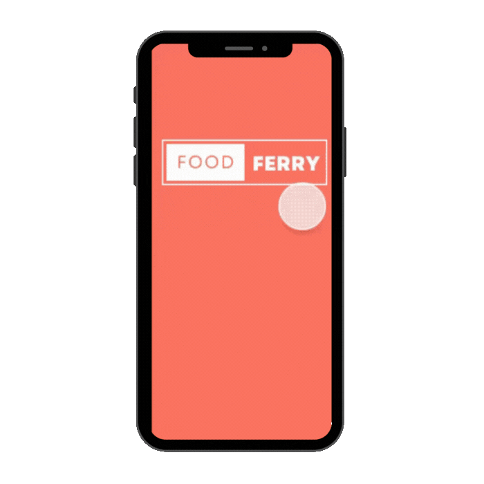
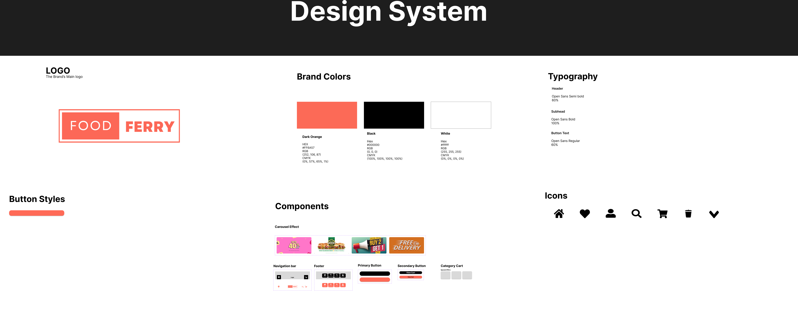
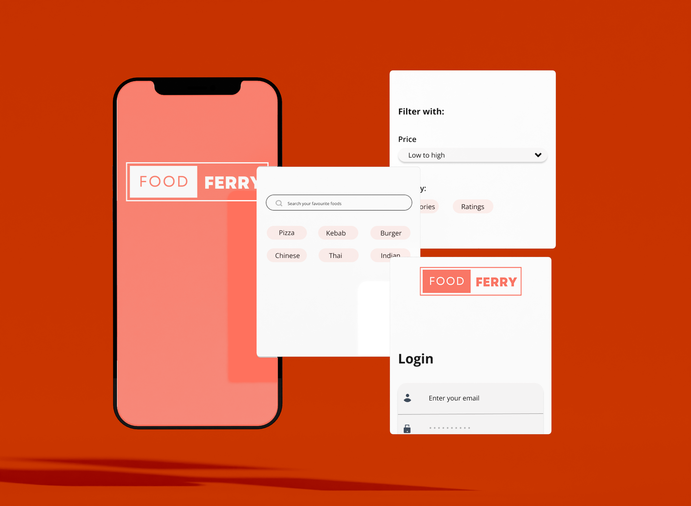
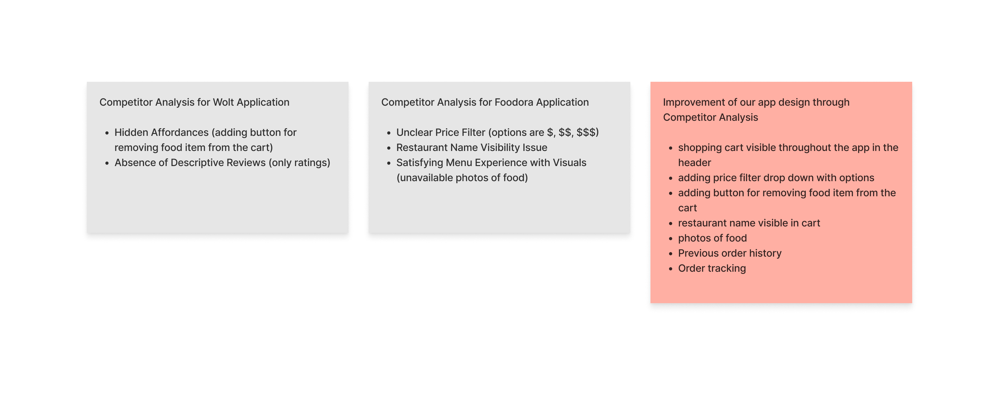
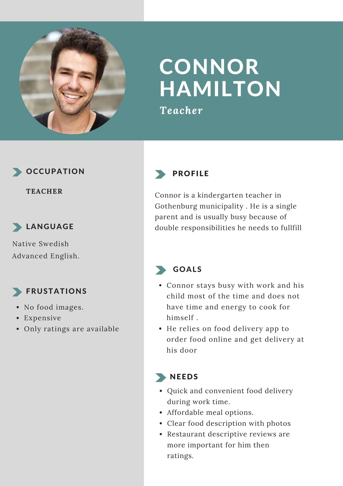
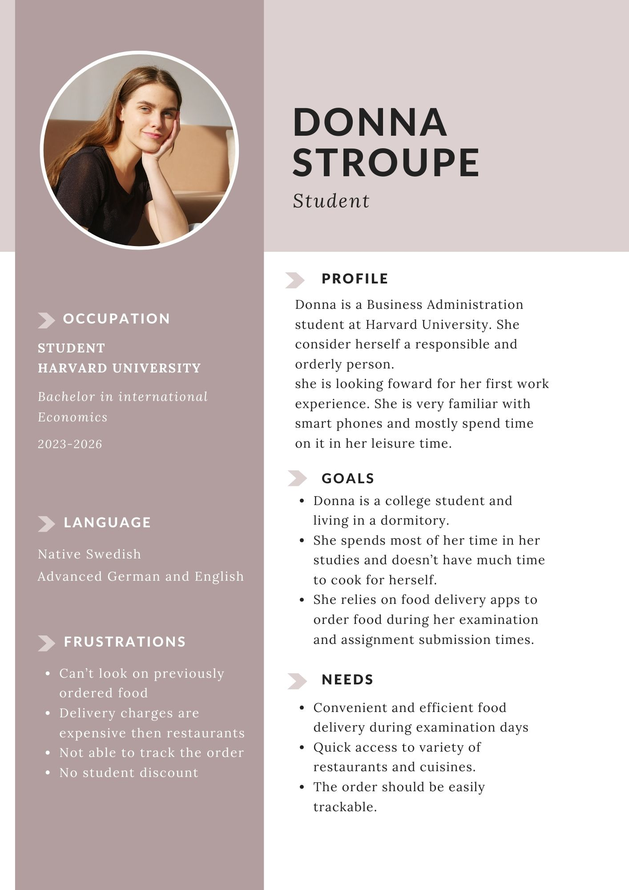

X


Food Ferry
UI/UX design/Web design & development
Figma/HTML/CSS/Javascript
For this project, we were tasked with building a prototype for a food delivery app. We began by conducting a competitor analysis to better understand the market and identify key features and design trends. Based on our research, we then created a functional prototype using Figma.
This project significantly deepened my understanding of prototyping and strengthened my skills in UX/UI design, particularly in translating user needs and market insights into an intuitive and visually appealing interface.
Co-Creator: Nancy.



Site Mapping
Competitors Analysis

Personas

